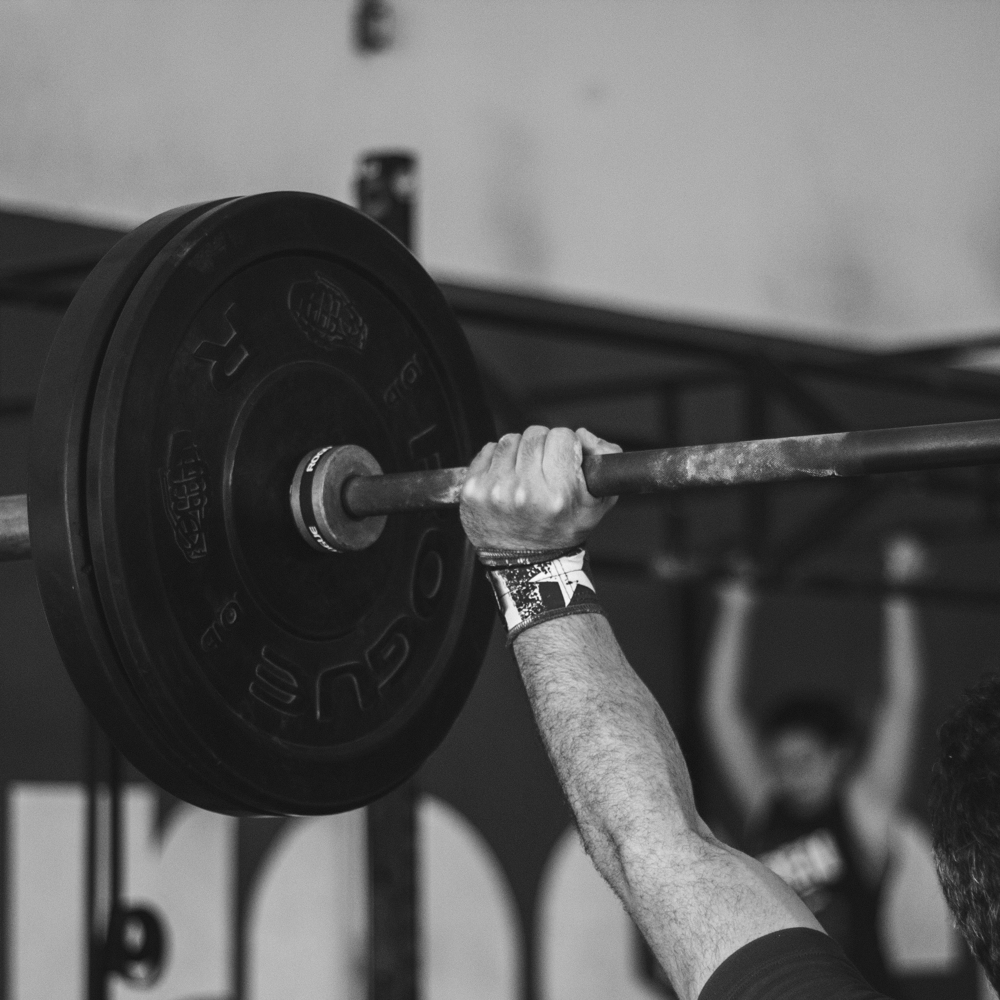

<!--
  Generated template for the SubmissionInfoPage page.

  See http://ionicframework.com/docs/components/#navigation for more info on
  Ionic pages and navigation.
-->
<ion-header>

  <ion-navbar>
    <ion-title>submission-info</ion-title>
  </ion-navbar>

</ion-header>

<ion-content padding>
  <div ng-if="message">
    <h4 text-center>{{ message.title }}</h4>
    
    <p text-center>{{ message.body }}</p>
  </div>

  <button ion-button large block (click)="logout()">Let's Get To Work!</button>
</ion-content>
